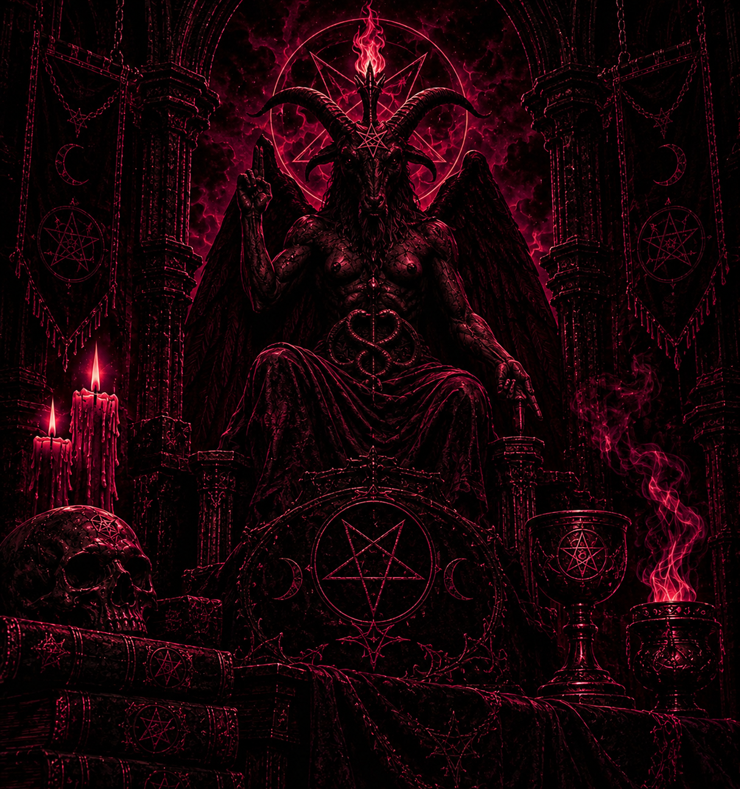

LUZ Y OSCURIDAD
Representan los contrastes que forman parte de la experiencia humana y la búsqueda de comprensión entre los opuestos.
ARCHIVO DE ENTIDADES · REGISTRO 03
EL SÍMBOLO DE LOS OPUESTOS
Una figura enigmática cuya representación ha sido interpretada a través de la historia desde perspectivas religiosas, filosóficas y esotéricas.
VOLVER AL ARCHIVO
REGISTRO HISTÓRICO
Baphomet es una figura histórica y simbólica cuya imagen ha cambiado a lo largo de los siglos. Su representación más conocida fue desarrollada por Éliphas Lévi en el siglo XIX y reúne elementos asociados a la dualidad, el equilibrio y la unión de los opuestos.
LECTURA SIMBÓLICA
Cada elemento de su representación contiene una interpretación relacionada con la dualidad, el equilibrio y la naturaleza.
Representan los contrastes que forman parte de la experiencia humana y la búsqueda de comprensión entre los opuestos.
La unión de elementos contrarios expresa la coexistencia de fuerzas que pueden complementarse.
Una interpretación relacionada con la armonía entre diferentes aspectos de la existencia.
DOCUMENTACIÓN DEL ARCHIVO
Un registro construido a partir de documentos históricos, estudios y distintas interpretaciones del símbolo.
Eliphas Levi desarrolló una de las representaciones más conocidas de Baphomet en su obra Dogme et Rituel de la Haute Magie (1854–1856).
REGISTRO HISTÓRICOLa figura de Baphomet ha recibido diferentes interpretaciones relacionadas con los opuestos, la naturaleza y el equilibrio.
INTERPRETACIÓN SIMBÓLICA